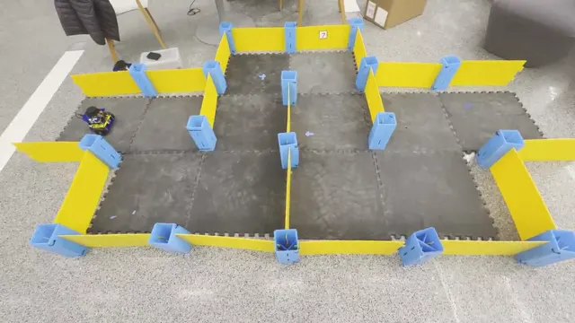
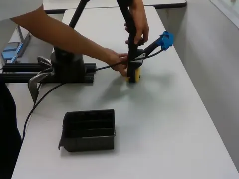
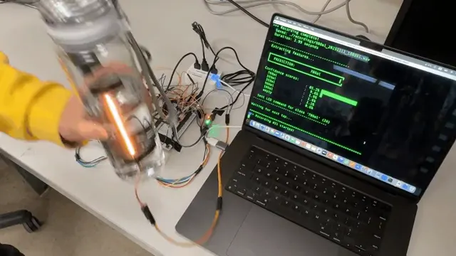
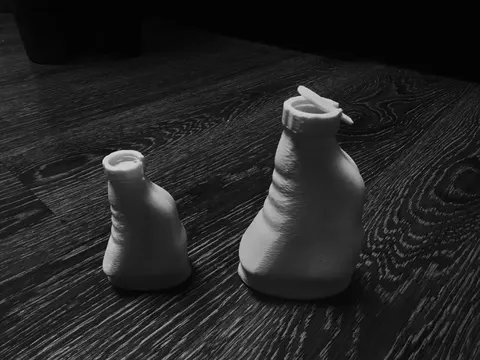
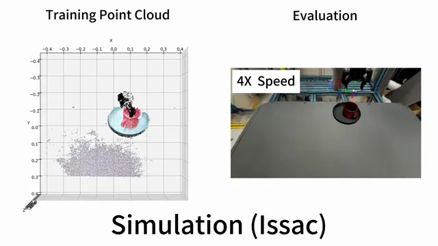
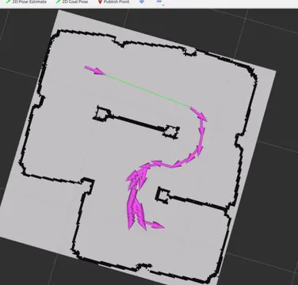
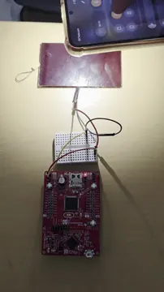
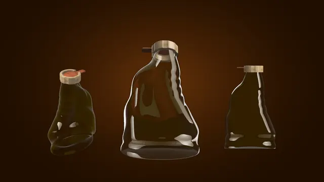
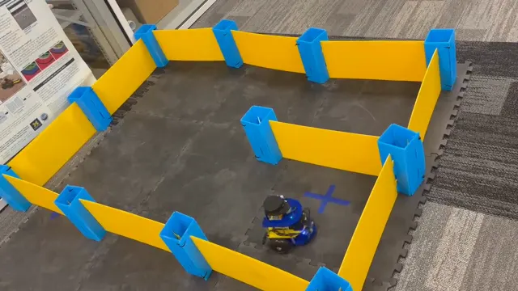

Computer Science · University of Michigan
Hello, I'm Kevin Na.
I build AI for the physical world: robots that learn from people, vision-language models that follow a surgery, and machine learning small enough to run on a microcontroller.

- RSS 2027Under review
Lift One, Know All. I built the simulation, dataset, metrics and baselines.
- ACL Rolling ReviewUnder review
Do Graph Memories Use Their Edges? Co-author.
- NeurIPS 2025Workshop paper
Liminal Training, at ResponsibleFM, as an Algoverse Fellow.
- 2× first placeAwards
MIT IDSS DSML hackathon, and Best Design at U-M's Thunderdome.

Inside SmolVLA
A 3D walkthrough of one forward pass of a fine-tuned SmolVLA robot policy, with the real numbers at every step, from two camera images to 5 seconds of joint angles.

YOLH: You Only Learn from Humans
A manipulation policy learned from human RGB-D demonstrations with a RISE-based diffusion policy, so the robot learns by watching people.

HydroSense
A bottle-agnostic water-level tracker: a bone-conduction mic, MFCC features and an SVM on an STM32.








